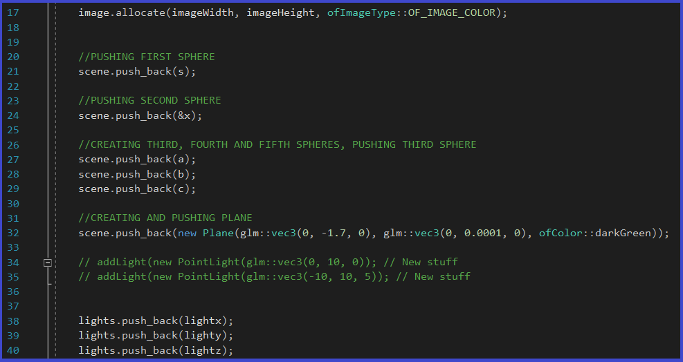

Python One Project
The above video shows the project with the drawn 3D spheres after I finish compiling and rendering it (at which point, an image is generated based on what the chosen camera was able to render). To build this project, I used openFrameworks, which is a C++ toolkit used for creative coding. It is written and built on top of OpenGL. The first step to make this project successful, was to setup a basic camera, a view plane, and a scene. Please note that because some essential parts of the source code were borrowed from Dr. Kevin Smith, I cannot share the entirety of the code (which is why I do not have this github project as public). I can, however, provide some pieces. The camera that is created for this project is stationary and along the Z axis. There is a class called "Sphere", that is able to create a Sphere primitive. One of the attributes in the class, is the diffuse color of the sphere.
I then create 3 different spheres (the primitives chosen for this project), along with a floor plane. Each sphere is initialized with a different color, and pushed unto the scene.

The program makes the camera shoot a series of rays, to generate either a 1200x800 or 600x400 pixeled image. If the ray collides with a sphere, then I take the diffuse color property of that Sphere, and make that specific pixel have the same color. I made it so that if the ray collides with a Sphere, then the ray stops traveling. This is to avoid the ray intersect various different spheres (should one sphere be in front of another). If the ray does not collide with anything (and goes to infinity), the pixel will then be the default black color. These are the essentials of RayTracing. Unfortunately, I cannot share the entirety of the code, but only the first few lines of te rayTracing function:

I added to this project a Light class, in order to be able to to add Lambert and Phong shadding. For the lambert shadding, we have the following function:
where p is the point of intersection, norm is the normal and diffuse is the diffuse color of the scene object. For the Phong shadding, we have:
where p is the point of intersection, norm is the normal, diffuse is the diffuse color of the scene object, specular is the specular color (color of your highlights) and power is the phong power exponent (10-10000). The following, are 4 of the more than 30 image renditions I obtained in the process of trying to obtain an optimal image with a functional Ray Tracer: